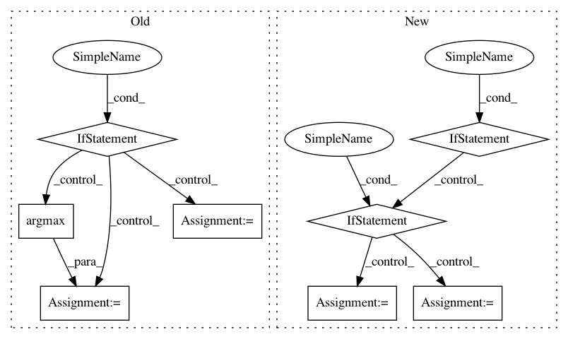

21a6d7c02d8919ac29b5aa0af8992ba13f0a3ddb,prody/chromatin/cluster.py,,calcGNMDomains,#Any#Any#,190
Before Change
labels_ = method(V, **kwargs)
if np.all(mask):
labels = labels_
else:
labels = np.empty(len(mask))
labels.fill(np.nan)
labels[mask] = labels_
currlbl = labels_[np.argmax(~np.isnan(labels_))]
for i, l in enumerate(labels):
if np.isnan(l):
labels[i] = currlbl
elif currlbl != l:
currlbl = l
return labels
After Change
labels_ = method(V, **kwargs)
if hasattr(modes, "_model"):
model = modes._model
if isinstance(model, MaskedGNM):
labels = model._extend(labels_, np.nan)
currlbl = labels_[0]
for i, l in enumerate(labels):
if np.isnan(l):
labels[i] = currlbl
elif currlbl != l:
currlbl = l
return labels
In pattern: SUPERPATTERN
Frequency: 3
Non-data size: 8
Instances
Project Name: prody/ProDy
Commit Name: 21a6d7c02d8919ac29b5aa0af8992ba13f0a3ddb
Time: 2019-07-08
Author: shz66@pitt.edu
File Name: prody/chromatin/cluster.py
Class Name:
Method Name: calcGNMDomains
Project Name: ntucllab/libact
Commit Name: e81142f0869321cd8792e13bfc4f6fb85d9f1efc
Time: 2015-12-22
Author: yangarbiter@gmail.com
File Name: libact/query_strategies/uncertainty_sampling.py
Class Name: UncertaintySampling
Method Name: make_query
Project Name: chainer/chainercv
Commit Name: a7706fbde22887909db42f96a696437c084c05db
Time: 2017-05-31
Author: Hakuyume@users.noreply.github.com
File Name: chainercv/evaluations/eval_detection_voc.py
Class Name:
Method Name: eval_detection_voc